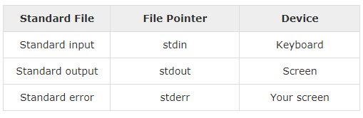
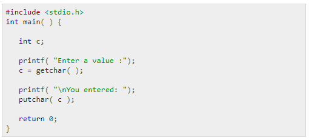
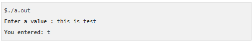
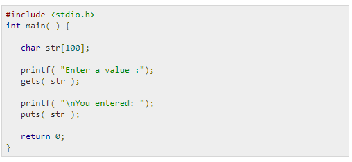
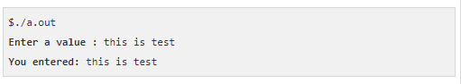
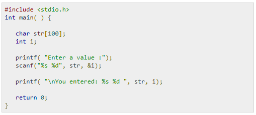
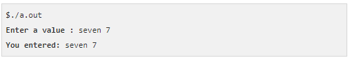
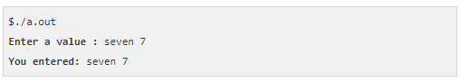

INPUT OUTPUT Operatins In C Programming
When we say Input, it means to feed some data into a program. An input can be given in the form of a file or from the command line. C programming provides a set of built-in functions to read the given input and feed it to the program as per requirement. When we say Output, it means to display some data on screen, printer, or in any file. C programming provides a set of built-in functions to output the data on the computer screen as well as to save it in text or binary files.
The Standard Files
C programming treats all the devices as files. So devices such as the display are addressed in the same way as files and the following three files are automatically opened when a program executes to provide access to the keyboard and screen. The file pointers are the means to access the file for reading and writing purpose. This section explains how to read values from the screen and how to print the result on the screen.
The getchar() and putchar() Functions
The int getchar(void) function reads the next available character from the screen and returns it as an integer. This function reads only single character at a time. You can use this method in the loop in case you want to read more than one character from the screen. The int putchar(int c) function puts the passed character on the screen and returns the same character. This function puts only single character at a time. You can use this method in the loop in case you want to display more than one character on the screen. Check the following example When the above code is compiled and executed, it waits for you to input some text. When you enter a text and press enter, then the program proceeds and reads only a single character and displays it as follows
The gets() and puts() Functions
The char *gets(char *s) function reads a line from stdin into the buffer pointed to by s until either a terminating newline or EOF (End of File). The int puts(const char *s) function writes the string 's' and 'a' trailing newline to stdout.
When the above code is compiled and executed, it waits for you to input some text. When you enter a text and press enter, then the program proceeds and reads the complete line till end, and displays it as follows
The scanf() and printf() Functions
The int scanf(const char *format, ...) function reads the input from the standard input stream stdin and scans that input according to the format provided. The int printf(const char *format, ...) function writes the output to the standard output stream stdout and produces the output according to the format provided. The format can be a simple constant string, but you can specify %s, %d, %c, %f, etc., to print or read strings, integer, character or float respectively. There are many other formatting options available which can be used based on requirements. Let us now proceed with a simple example to understand the concepts better When the above code is compiled and executed, it waits for you to input some text. When you enter a text and press enter, then program proceeds and reads the input and displays it as follows
When the above code is compiled and executed, it waits for you to input some text. When you enter a text and press enter, then program proceeds and reads the input and displays it as follows
Here, it should be noted that scanf() expects input in the same format as you provided %s and %d, which means you have to provide valid inputs like "string integer". If you provide "string string" or "integer integer", then it will be assumed as wrong input. Secondly, while reading a string, scanf() stops reading as soon as it encounters a space, so "this is test" are three strings for scanf().